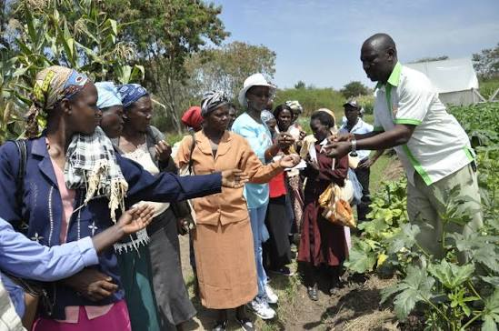

Fish Farming
Breeding, hatchery management and commercial catfish production using sustainable aquaculture practices.
Learn MoreFrom crop production and aquaculture to farm consultancy, training and quality agricultural inputs, we provide practical solutions that help individuals, families and agribusinesses succeed.
We deliver practical agricultural services that improve productivity, support sustainable farming and create long-term value for individuals, families and businesses.
Breeding, hatchery management and commercial catfish production using sustainable aquaculture practices.
Learn MoreCultivation of vegetables, cassava, hibiscus (zobo) and other food and cash crops.
Learn MoreValue-added agricultural products including smoked catfish, moringa powder and organic manure.
Learn MoreQuality seedlings, fertilizers, agro-seeds, animal nutrients and essential farming supplies.
Learn MoreHands-on training in fish farming, crop production, snail farming and agribusiness development.
Learn MoreProfessional advice on farm establishment, agribusiness planning, management and technical support.
Learn MoreWe produce, process and supply high-quality agricultural products and farm inputs that support sustainable farming and healthy living.
Premium smoked catfish processed under hygienic conditions for homes and businesses.
Nutrient-rich moringa leaf powder carefully processed to retain its natural benefits.
Healthy seedlings and quality planting seeds for successful crop production.
Environmentally friendly organic fertilizers that improve soil fertility and crop yield.
Quality fertilizers, animal nutrients and agricultural supplies for modern farming.
Pure, carefully sourced natural honey suitable for healthy nutrition and commercial supply.
We empower aspiring and experienced farmers through practical agricultural training, professional consultancy and technical support tailored to modern farming practices.

From the first consultation to continuous support, our structured approach ensures every client receives practical, reliable and sustainable agricultural solutions.
We understand your goals and recommend the most suitable agricultural solutions.
We assist with farm establishment, planning, input selection and project implementation.
We support crop production, aquaculture, processing and sustainable farm management.
Continuous guidance, technical support and capacity building for long-term success.
Find answers to common questions about our agricultural services, products and consultancy.
Yes. We assess your goals, available resources and location before recommending the most suitable agricultural solution.
Absolutely. Our training programs are designed for beginners as well as experienced farmers seeking to improve their skills.
Yes. Depending on the product and quantity, we can arrange deliveries to different locations within Nigeria.
Yes. We welcome collaborations with businesses, institutions, NGOs and government agencies on agricultural projects and training.